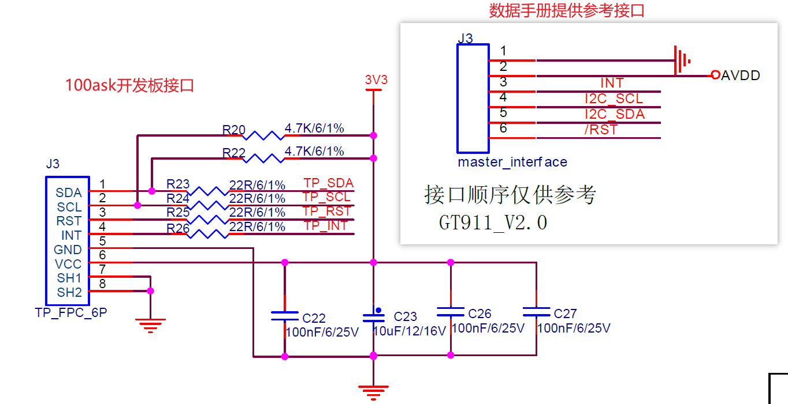
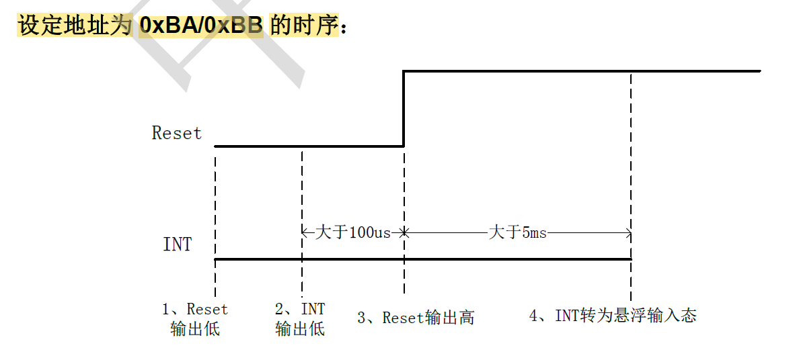

Linux-触摸屏驱动
环境
硬件环境
开发板型号 ：100ask_imx6ull_pro 开发板 处理器类型 ：NXP IMX6ULL处理器架构 ：恩单核 Cortex-A7处理器主频 ：800MHZ内存容量 ：512 MB DDR3存储介质 ：4GB eMMC本次测试的驱动 ：GT911 触摸屏芯片
软件环境
宿主机
宿主机操作系统 ：Ubuntu 18.04交叉编译器 ：100ask 提供的工具链 arm-buildroot-linux-gnueabihf- 支持的最低内核版本 ：4.9.0
开发板
序言
一开始是电阻触摸屏，但是只能单点触摸，后面推出了电容触摸屏，支持多点触摸，后续的电阻触摸屏也支持多点触摸了，但是电阻屏需要手指给予一定的压力才有反应，而电容屏只需要手指轻触即可。
工作原理
电容触摸：电容屏中有一个控制芯片，它会周期性产生驱动信号，接收电极接收到信号，并可测量电荷大小。当电容屏被按下时，由于人体电场，用户和触摸屏表面形成以一个耦合电容 ，对于高频电流来说，电容是直接导体，于是手指从接触点吸走一个很小的电流 ，从而影响了接收电极接收到的电荷大小。主控芯片根据电荷大小即可计算出触点位置。
电阻触摸：主要是通过压力感应原理 来实现对屏幕内容的操作和控制的。这种触摸屏屏体部分是一块与显示器表面非常配合的多层复合薄膜 ，轻触表层压下时，接触到底层，控制器同时从四个角读出相称的电流及计算手指位置的距离。
另外注意区分一下 LCD 和触摸屏，LCD 是输出设备，触摸屏是输入设备 ，一般是将触摸屏制作成跟 LCD 一样的尺寸然后覆盖在 LCD 上。
Linux 内核一般都有许多触摸屏芯片的驱动，一般只需要根据驱动程序修改设备树，并在内核中使能其驱动就可以使用。这里为了学习触摸屏芯片驱动编写过程，将其他触摸屏芯片的驱动都失能。
移植第三方库 tslib 库对触摸屏参数进行校正，最后将测试完毕的驱动放进内核并编译，就不用每次都手动加载了。
触摸屏驱动解析
多点触摸协议
老版本的 Linux 内核不支持多点触摸（Multi-touch，简称 MT），MT 协议分为两种类型：Type A 和 Type B。
Type A：适用于触摸点不能被区分或者追踪，此类型的设备上报原始数据。
Type B：适用于有硬件追踪并能区分触摸点的触摸设备，此类型设备通过 slot 更新某一个触摸点的信息，一般的多点电容触摸屏 IC 都有此能力。
触摸点的信息通过一系列的 ABS_MT 事件 (有的资料也叫消息)上报给 linux 内核，只有 ABS_MT 事件是用于多点触摸的，ABS_MT 事件定义在文件 include/uapi/linux/input-event-codes.h 中，相关事件如下所示：
1 2 3 4 5 6 7 8 9 10 11 12 13 14 15 #define ABS_MT_SLOT 0x2f #define ABS_MT_TOUCH_MAJOR 0x30 #define ABS_MT_TOUCH_MINOR 0x31 #define ABS_MT_WIDTH_MAJOR 0x32 #define ABS_MT_WIDTH_MINOR 0x33 #define ABS_MT_ORIENTATION 0x34 #define ABS_MT_POSITION_X 0x35 #define ABS_MT_POSITION_Y 0x36 #define ABS_MT_TOOL_TYPE 0x37 #define ABS_MT_BLOB_ID 0x38 #define ABS_MT_TRACKING_ID 0x39 #define ABS_MT_PRESSURE 0x3a #define ABS_MT_DISTANCE 0x3b #define ABS_MT_TOOL_X 0x3c #define ABS_MT_TOOL_Y 0x3d
ABS_MT 事件中常用以下几个：
Type A 类型的设备使用 input_mt_sync()函数来隔离不同的触摸点数据信息 ，该函数会触摸 SYN_MT_REPORT 事件，通知接收者获取当前触摸数据，并且准备接收下一个触摸点数据。
1 void input_mt_sync (struct input_dev *dev)
Type B 类型的设备使用 input_mt_slot 函数上报触摸点信息时可以区分哪一个触摸点 ，会触发 ABS_MT_SLOT 事件，告诉接收者当前正在更新的时哪个触摸点的数据。
1 void input_mt_slot (struct input_dev *dev, int slot)
第一个参数为 input_dev 设备，第二参数 slot 用于指定当前上报的是哪个触摸点信息 。
触摸点信息上报时序
触摸点信息上报时序分为两种类型：Type A 和 Type B。
Type A 设备：内核驱动需要一次性将触摸屏上的所有触摸点信息全部上报 ，每个触摸点的信息在本次上报事件流中的顺序不重要，因为事件的过滤和触摸点跟踪是在内核空间处理的。
Type B 设备：需要给每个识别出来的触摸点分配一个 slot ，后面使用这个 slot 来上报触摸点信息。
Type A 触摸点信息上报时序
Type A 类型的设备，发送触摸点信息时序如下（以 2 个触摸点为例）：
1 2 3 4 5 6 7 ABS_MT_POSITION_X x[0 ] ABS_MT_POSITION_Y y[0 ] SYN_MT_REPORT ABS_MT_POSITION_X x[1 ] ABS_MT_POSITION_Y y[1 ] SYN_MT_REPORT SYN_REPORT
ABS_MT_POSITION_X 和 ABS_MT_POSITION_Y 事件是通过 input_report_abs 函数实现来上报触摸点的 x 坐标和 y 坐标数据。
SYN_MT_REPORT 事件是通过 input_mt_sync 函数实现的。
SYN_REPORT 事件是通过 input_sync 函数实现的。每上报完一轮触摸点信息就调用一次 input_sync 函数，也就是发送一个 SYN_REPORT 事件
Type B 触摸点信息上报时序
Type B 类型的设备，发送触摸点信息时序如下（以 2 个触摸点为例）：
1 2 3 4 5 6 7 8 9 ABS_MT_SLOT 0 ABS_MT_TRACKING_ID 45 ABS_MT_POSITION_X x[0 ] ABS_MT_POSITION_Y y[0 ] ABS_MT_SLOT 1 ABS_MT_TRACKING_ID 46 ABS_MT_POSITION_X x[1 ] ABS_MT_POSITION_Y y[1 ] SYN_REPORT
ABS_MT_POSITION_X 和 ABS_MT_POSITION_Y 事件是通过 input_report_abs 函数实现来上报触摸点的 x 坐标和 y 坐标数据。
每次上报一个触摸点坐标之前要先使用 input_mt_slot 函数上报当前触摸点 SLOT，触摸点的 SLOT 其实就是触摸点 ID，需要由触摸 IC 提供。
每个 SLOT 必须关联一个 ABS_MT_TRACKING_ID，通过修改 SLOT 关联的 ABS_MT_TRACKING_ID 来完成对触摸点的添加、替换或删除。具体用到的函数就是 input_mt_report_slot_state，如果是添加一个新的触摸点，那么此函数的第三个参数 active 要设置为 true ，linux 内核会自动分配一个 ABS_MT_TRACKING_ID 值，不需要用户去指定具体的 ABS_MT_TRACKING_ID 值。
SYN_REPORT 事件是通过 input_sync 函数实现的。当所有的触摸点坐标都上传完毕就调用一次 input_sync 函数，也就是发送一个 SYN_REPORT 事件
当一个触摸点移除以后，同样需要通过 SLOT 关联的 ABS_MT_TRACKING_ID 事件发送一个 -1 给内核，调用
input_mt_report_slot_state 函数完成，只需将第三个参数 active 设置为 false 即可。
时序如下所示：
1 2 ABS_MT_TRACKING_ID -1 SYN_REPORT
多点触摸所使用到的 API 函数
input_mt_init_slots 函数用于初始化 MT 的输入 slots，编写 MT 驱动的时候必须先调用此函数初始化 slots。
1 2 int input_mt_init_slots (struct input_dev *dev, unsigned int num_slots, unsigned int flags)
dev ：MT 设备对应的 input_dev
num_slots：SLOT 数量，即触摸点的数量
返回值：0 成功，负值失败
flags：可设置的 flags 如下：
1 2 3 4 5 #define INPUT_MT_POINTER 0x0001 #define INPUT_MT_DIRECT 0x0002 #define INPUT_MT_DROP_UNUSED 0x0004 #define INPUT_MT_TRACK 0x0008 #define INPUT_MT_SEMI_MT 0x0010
input_mt_slot 函数用于 Type B 类型，用于产生 ABS_MT_SLOT 事件，告诉内核上报的是哪个触摸点的坐标数据。
1 2 3 4 5 static inline void input_mt_slot (struct input_dev *dev, int slot) { input_event(dev, EV_ABS, ABS_MT_SLOT, slot); }
dev ：MT 设备对应的 input_dev
slot：当前发送的哪个 slot 的坐标信息
input_mt_report_slot_state 函数此函数用于 Type B 类型，用于产生 ABS_MT_TRACKING_ID 和ABS_MT_TOOL_TYPE 事件，ABS_MT_TRACKING_ID 和 ABS_MT_TOOL_TYPE 事件。
1 2 3 void input_mt_report_slot_state (struct input_dev *dev, unsigned int tool_type, bool active) ;
dev ：MT 设备对应的 input_dev
tool_type：触摸类型，MT_TOOL_FINGER(手指) 、MT_TOOL_PEN(笔)或 MT_TOOL_PALM(手掌)
active：true 为连续触摸，input 子系统内核会自动分配一个 ABS_MT_TRACKING_ID 给 slot。false，触摸点抬起，表示某个触摸点无效了，input 子系统内核会分配一个 -1 给 slot，表示触摸点溢出。
input_report_abs 函数。Type A 和 Type B 类型都使用此函数上报触摸点坐标信息，通过ABS_MT_POSITION_X 和 ABS_MT_POSITION_Y 事件实现 X 和 Y 轴坐标信息上报。
1 2 static inline void input_report_abs (struct input_dev *dev, unsigned int code, int value)
dev ：MT 设备对应的 input_dev。
code：要上报什么数据，可设置为 ABS_MT_POSITION_X（ x 坐标） 和 ABS_MT_POSITION_Y（ y 坐标）。
value：坐标的值。
如果追踪到的触摸点数量多于当前上报的数量，驱动程序使用 BTN_TOOL_TAP 事件来通知用户空间当前追踪到的触摸点总数量，然后调用 input_mt_report_pointer_emulation 函数将 use_count 参数设置为 false。否则的话将 use_count 参数设置为 true，表示当前的触摸点数量(此函数会获取到具体的触摸点数量，不需要用户给出)。
1 2 void input_mt_report_pointer_emulation (struct input_dev *dev, bool use_count)
dev ：MT 设备对应的 input_dev。
use_count：true，有效的触摸点数量；flase，追踪到的触摸点数量多于当前上报的数量
触摸屏驱动编写
多点电容触摸驱动框架
根据芯片接口和多点电容触摸协议可知会用到以下驱动框架：
触摸芯片的接口，一般为 I2C 接口，I2C 驱动框架
linux 一般通过中断上报触摸点信息，中断框架
多点电容触摸属于 input 子系统，input 子系统框架
大致流程就是使用 I2C 驱动框架注册 i2c_driver，与设备树中节点进行匹配，匹配成功则对芯片进行初始化、初始化中断、注册 input 设备，当手触摸屏幕时则产生中断，进入中断线程函数读取触摸点数据并通过 input 子系统上报。
触摸屏芯片 GT911
100ask 开发板用到的触摸屏芯片是 GT911，支持同时识别 5 个触摸点位的实时准确位置，移动轨迹及触摸面积。
I2C 从设备地址为 0x5D 或 0x14
寄存器 16 位，寄存器位宽 8 位
退出中断时需要对 0x814E 寄存器清零，否则会一直触发中断
当有触摸时，GT911 每个扫描周期均会通过 INT 脚发出脉冲信号，通知主设备读取坐标信息
中断触发方式：设置寄存器 0x804D，0 为上升沿触发，1 为下降沿触发。
GT911 接口如下：

gt911 芯片上电时序图：0xBA/0xBB 是加上写数据位或读数据位凑成的 8 位地址。

特别重要的寄存器：
Bit7：buffer status，1 表示坐标已经准备好，主控可以读取，0 表示未就绪，数据无效，当主控读取完坐标后，必须将此标志位或整个寄存器写为 0，否则会一直触发中断。
Bit3~0：低 4 位，number of touch points，表示有几个触摸点数据。
解决问题：GT911触控芯片，中断引脚初始化后，自动重复的进入中断_gt911一直中断-CSDN博客
修改设备树
由原理图可知，GT911 芯片用到了 4 个 IO 口：SDA、SCL、复位 IO、中断 IO。
iomuxc_snvs 节点中添加复位 IO
1 2 3 4 5 /* tsc reset pin*/ pinctrl_tsc_reset: tscresetgrp { fsl,pins = < MX6ULL_PAD_SNVS_TAMPER2__GPIO5_IO02 0x000110A0 >;
iomuxc 节点中添加中断 IO
1 2 3 4 5 6 /* gt911 INT io*/ pinctrl_tsc_int: tscintgrp { fsl,pins = < MX6UL_PAD_GPIO1_IO05__GPIO1_IO05 0x000010B0 > ; };
iomuxc 节点中添加 I2C2 的 SDA 和 SCL：
1 2 3 4 5 6 pinctrl_i2c2: i2c2grp { fsl,pins = < MX6UL_PAD_UART5_TX_DATA__I2C2_SCL 0x4001b8b0 MX6UL_PAD_UART5_RX_DATA__I2C2_SDA 0x4001b8b0 > ; };
在 i2c2 节点下添加 GT911 子节点：
1 2 3 4 5 6 7 8 9 10 11 12 13 14 15 16 17 18 19 20 21 22 23 24 25 26 27 28 29 &i2c2 { clock_frequency = <100000>; pinctrl-names = "default"; pinctrl-0 = <&pinctrl_i2c2>; status = "okay"; codec: wm8960@1a { compatible = "wlf,wm8960"; reg = <0x1a>; clocks = <&clks IMX6UL_CLK_SAI2>; clock-names = "mclk"; wlf,shared-lrclk; }; /* gt911 */ gt911@5d { compatible = "goodix,gt911"; reg = <0x5d>; status = "okay"; interrupt-parent = <&gpio1>; interrupts = <5 IRQ_TYPE_EDGE_FALLING>; pinctrl-names = "default"; pinctrl-0 = <&pinctrl_tsc_reset &pinctrl_tsc_int>; reset-gpios = <&gpio5 2 GPIO_ACTIVE_LOW>; irq-gpios = <&gpio1 5 IRQ_TYPE_EDGE_FALLING>; }; };
编写多点电容触摸驱动
头文件和 gt911_info 结构体存放 gt911 芯片的配置信息，gt911_dev 结构体用于存放一些重要变量。
1 2 3 4 5 6 7 8 9 10 11 12 13 14 15 16 17 18 19 20 21 22 23 24 25 26 27 28 29 30 31 32 33 34 #include <linux/init.h> #include <linux/module.h> #include <linux/i2c.h> #include <linux/gpio.h> #include <linux/of_gpio.h> #include <linux/delay.h> #include <linux/input.h> #include <linux/input/mt.h> #include <linux/interrupt.h> struct gt911_info { uint16_t pid; uint16_t max_x, max_y; uint16_t version; uint8_t vendor_id; }; struct gt911_dev { struct device_node *nd ; int int_pin; int reset_pin; int irq_num; void *private_data; struct gt911_info info ; struct input_dev *input_dev ; struct i2c_client *client ; }; #define GT911_CTRL_REG 0X8040 #define GT911_PID_REG 0X8140 #define GT911_CONFIG_DATA_REG 0x8147 #define GT911_COOR_REG 0X814E #define GT911_TP1_REG 0X814F #define MAX_SUPPORT_POINTS 5
i2c 驱动框架，注册 i2c_driver 结构体：
1 2 3 4 5 6 7 8 9 10 11 12 13 14 15 16 17 18 19 20 21 22 23 24 25 26 27 28 29 30 31 32 33 34 35 36 37 38 39 40 41 42 43 static const struct i2c_device_id gt911_id_table [] = {"goodix,gt911" , 0 }, {}, }; static const struct of_device_id gt911_of_match_table [] = {.compatible = "goodix,gt911" }, {}, }; static struct i2c_driver gt911_i2c_driver = .driver = { .name = "gt911" , .owner = THIS_MODULE, .of_match_table = gt911_of_match_table, }, .id_table = gt911_id_table, .probe = gt911_probe, .remove = gt911_remove, }; static int __init gt911_init (void ) { int ret; printk("gt911 init\n" ); ret = i2c_add_driver(>911_i2c_driver); return ret; } static void __exit gt911_exit (void ) { i2c_del_driver(>911_i2c_driver); } module_init(gt911_init); module_exit(gt911_exit); MODULE_LICENSE("GPL" );
probe 和 remove 函数如下：
1 2 3 4 5 6 7 8 9 10 11 12 13 14 15 16 17 18 19 20 21 22 23 24 25 26 27 28 29 30 31 32 33 34 35 36 37 38 39 40 41 42 43 44 45 46 47 48 49 50 51 52 53 54 55 56 57 58 59 60 61 62 63 64 65 66 static int gt911_probe (struct i2c_client *client, const struct i2c_device_id *id) { struct gt911_dev *dev ; int ret = 0 ; dev = devm_kzalloc(&client->dev, sizeof (*dev), GFP_KERNEL); if (!dev) return -ENOMEM; dev->client = client; i2c_set_clientdata(client, dev); ret = gt911_get_gpio(dev); if (ret) return ret; ret = gt911_reset(dev); if (ret) { printk("Failed reset\n" ); return ret; } ret = gt911_i2c_test(dev->client); if (ret) { printk("I2C communication failure\n" ); return ret; } ret = gt911_read_config(dev); gt911_request_input_dev(dev); if (ret) { printk("Failed to request input dev\n" ); return ret; } ret = gt911_request_irq(dev); if (ret) { printk("Failed to request IRQ\n" ); return ret; } printk("gt911_probe end\n" ); return 0 ; } static int gt911_remove (struct i2c_client *client) { struct gt911_dev *dev = input_unregister_device(dev->input_dev); printk("gt911_remove\n" ); return 0 ; }
gt911_get_gpio 函数获取设备树中的 io 信息，查找 i2c2 总线下的 gt911@5d 子节点的 irq-gpios 和 reset-gpios 属性，为其分配 gpio 编号。
1 2 3 4 5 6 7 8 9 10 11 12 13 14 15 16 17 18 19 static int gt911_get_gpio (struct gt911_dev *dev) { dev->int_pin = of_get_named_gpio(dev->client->dev.of_node, "irq-gpios" , 0 ); if (dev->int_pin < 0 ) { printk("Failed to get irq-gpios gpio\n" ); return dev->int_pin; } dev->reset_pin = of_get_named_gpio(dev->client->dev.of_node, "reset-gpios" , 0 ); if (dev->reset_pin < 0 ) { printk("Failed to get reset-gpios gpio\n" ); return dev->reset_pin; } return 0 ; }
gt911_reset 函数设置复位 IO 和中断 IO 为 GPIO，并且根据数据手册给出的芯片上电时序，对 gt911 芯片复位。
1 2 3 4 5 6 7 8 9 10 11 12 13 14 15 16 17 18 19 20 21 22 23 24 25 26 27 28 29 30 31 32 static int gt911_reset (struct gt911_dev *dev) { int ret; if (gpio_is_valid(dev->reset_pin)) { ret = devm_gpio_request_one(&dev->client->dev, dev->reset_pin, GPIOF_OUT_INIT_HIGH, "gp911-reset" ); if (ret) return ret; } if (gpio_is_valid(dev->int_pin)) { ret = devm_gpio_request_one(&dev->client->dev, dev->int_pin, GPIOF_OUT_INIT_HIGH, "gp911-int" ); if (ret) return ret; } gpio_set_value(dev->reset_pin, 0 ); msleep(20 ); gpio_set_value(dev->int_pin, 0 ); usleep_range(100 , 2000 ); gpio_set_value(dev->reset_pin, 1 ); usleep_range(6000 , 10000 ); gpio_direction_input(dev->int_pin); return 0 ; }
gt911_read_reg 和 gt911_write_reg 函数是读取和写入 gt911 芯片数据的函数，跟之前芯片不同的是，这个芯片的寄存器地址是 16 位，修改一下即可使用。
1 2 3 4 5 6 7 8 9 10 11 12 13 14 15 16 17 18 19 20 21 22 23 24 25 26 27 28 29 30 31 32 33 34 35 36 37 38 39 40 41 42 43 44 45 46 47 48 49 50 51 52 53 54 55 56 57 58 59 60 61 62 63 static int gt911_read_reg (struct i2c_client *client, uint16_t reg, uint8_t *buf, uint16_t len) { int ret; uint8_t reg_16bit[2 ]; struct i2c_msg msg [2]; reg_16bit[0 ] = reg >> 8 ; reg_16bit[1 ] = reg & 0xFF ; msg[0 ].addr = client->addr; msg[0 ].flags = 0 ; msg[0 ].buf = reg_16bit; msg[0 ].len = 2 ; msg[1 ].addr = client->addr; msg[1 ].flags = I2C_M_RD; msg[1 ].buf = buf; msg[1 ].len = len; ret = i2c_transfer(client->adapter, msg, 2 ); if (ret == 2 ) ret = 0 ; else ret = -EREMOTEIO; return ret; } static int gt911_write_reg (struct i2c_client *client, uint16_t reg, uint8_t *buf, uint16_t len) { uint8_t tmp[256 ]; struct i2c_msg msg ; tmp[0 ] = reg >> 8 ; tmp[1 ] = reg & 0xFF ; memcpy (&tmp[2 ], buf, len); msg.addr = client->addr; msg.flags = 0 ; msg.buf = tmp; msg.len = len + 2 ; return i2c_transfer(client->adapter, &msg, 1 ); }
gt911_i2c_test 函数是测试能否与 gt911 芯片正常的通信，也可以不要其实。
1 2 3 4 5 6 7 8 9 10 11 12 13 14 15 16 17 18 19 static int gt911_i2c_test (struct i2c_client *client) { int count = 0 ; int ret = 0 ; uint8_t buf; while (count++ > 2 ) { ret = gt911_read_reg(client, GT911_CONFIG_DATA_REG, &buf, 1 ); if (!ret) return 0 ; printk("gt911 i2c test attempt %d: %d\n" , count, ret); msleep(10 ); } return ret; }
gt911_read_config 函数是用来读取 gt911 芯片相对应寄存器地址，来获取 Product ID、Firmware version、vendor_id 以及触摸的最大 x 坐标和 y 坐标。
1 2 3 4 5 6 7 8 9 10 11 12 13 14 15 16 17 18 19 20 21 22 23 24 25 26 27 28 29 30 31 32 33 34 35 36 37 static int gt911_read_config (struct gt911_dev *dev) { int ret; uint8_t buf[11 ]; uint8_t pid[4 ]; long id; ret = gt911_read_reg(dev->client, GT911_PID_REG, buf, 11 ); if (ret) return ret; memcpy (pid, buf, 4 ); ret = kstrtol(pid, 10 , &id); if (ret) return ret; dev->info.pid = (uint16_t )id; printk("Product ID:%d\n" , dev->info.pid); dev->info.version = ((uint16_t )buf[5 ] << 8 ) | buf[4 ]; printk("Firmware version: %x\n" , dev->info.version); dev->info.max_x = ((uint16_t )buf[7 ] << 8 ) | buf[6 ]; dev->info.max_y = ((uint16_t )buf[9 ] << 8 ) | buf[8 ]; printk("Max X: %d, Max Y: %d\n" , dev->info.max_x, dev->info.max_y); dev->info.vendor_id = buf[10 ]; printk("Vendor_id: %d\n" , dev->info.vendor_id); return 0 ; }
gt911_request_input_dev 函数用来申请注册 input 设备，对 input 设备进行初始化，设置需要上报哪些事件，初始化多点触摸功能。
1 2 3 4 5 6 7 8 9 10 11 12 13 14 15 16 17 18 19 20 21 22 23 24 25 26 27 28 29 30 31 32 33 34 35 36 37 38 39 40 41 42 43 44 45 static int gt911_request_input_dev (struct gt911_dev *dev) { int ret; dev->input_dev = devm_input_allocate_device(&dev->client->dev); if (!dev->input_dev) { printk("Failed to allocate input device\n" ); return -ENOMEM; } dev->input_dev->name = "GT911 TouchScreen" ; dev->input_dev->phys = "input/ts" ; dev->input_dev->id.bustype = BUS_I2C; dev->input_dev->id.vendor = dev->info.vendor_id; dev->input_dev->id.product = dev->info.pid; dev->input_dev->id.version = dev->info.version; __set_bit(EV_KEY, dev->input_dev->evbit); __set_bit(EV_ABS, dev->input_dev->evbit); __set_bit(BTN_TOUCH, dev->input_dev->keybit); input_set_abs_params(dev->input_dev, ABS_MT_POSITION_X, 0 , dev->info.max_x, 0 , 0 ); input_set_abs_params(dev->input_dev, ABS_MT_POSITION_Y, 0 , dev->info.max_y, 0 , 0 ); input_set_abs_params(dev->input_dev, ABS_MT_TOUCH_MAJOR, 0 , 255 , 0 , 0 ); ret = input_mt_init_slots(dev->input_dev, MAX_SUPPORT_POINTS, INPUT_MT_DIRECT | INPUT_MT_DROP_UNUSED); if (ret) { printk("Failed to init mt slots\n" ); return ret; } ret = input_register_device(dev->input_dev); if (ret) { printk("Failed to register input device\n" ); return ret; } return 0 ; }
中断部分：使用中断线程化，在中断线程函数中获取触摸点信息并上报信息，退出中断时要对 0x814E 寄存器清零，否则会一直触摸中断。
1 2 3 4 5 6 7 8 9 10 11 12 13 14 15 16 17 18 19 20 21 22 23 24 25 26 27 28 29 30 static irqreturn_t gt911_irq_handler (int irq, void *dev_id) { int ret; uint8_t data; int touch_num; struct gt911_dev *dev =struct gt911_dev *)dev_id; ret = gt911_read_reg(dev->client, GT911_COOR_REG, &data, 1 ); if (data == 0x00 ) return IRQ_HANDLED; touch_num = data & 0x0F ; gt911_process_event(dev, touch_num); data = 0x00 ; gt911_write_reg(dev->client, GT911_COOR_REG, &data, 1 ); return IRQ_HANDLED; } static int gt911_request_irq (struct gt911_dev *dev) { return devm_request_threaded_irq(&dev->client->dev, dev->client->irq, NULL , gt911_irq_handler, IRQ_TYPE_EDGE_FALLING | IRQF_ONESHOT, dev->client->name, dev); }
处理和上报触摸数据。
1 2 3 4 5 6 7 8 9 10 11 12 13 14 15 16 17 18 19 20 21 22 23 24 25 26 27 28 29 30 31 32 33 34 35 36 37 38 39 40 41 42 43 44 45 46 static void gt911_ts_report_touch (struct gt911_dev *dev, uint8_t *data, int i) { int input_x, input_y, input_w; input_x = ((uint16_t )data[2 ] << 8 ) | data[1 ]; input_y = ((uint16_t )data[4 ] << 8 ) | data[3 ]; input_w = ((uint16_t )data[6 ] << 8 ) | data[5 ]; input_mt_slot(dev->input_dev, i); input_mt_report_slot_state(dev->input_dev, MT_TOOL_FINGER, true ); input_report_abs(dev->input_dev, ABS_MT_POSITION_X, input_x); input_report_abs(dev->input_dev, ABS_MT_POSITION_Y, input_y); input_report_abs(dev->input_dev, ABS_MT_TOUCH_MAJOR, input_w); } static void gt911_process_event (struct gt911_dev *dev, int touch_num) { int i, ret; uint8_t touch_data[8 * MAX_SUPPORT_POINTS - 3 ]; uint16_t cur_touch = 0 ; static uint16_t pre_touch = 0 ; ret = gt911_read_reg(dev->client, GT911_TP1_REG, touch_data, 8 * MAX_SUPPORT_POINTS - 3 ); for (i = 0 ; i < MAX_SUPPORT_POINTS; i++) { if (touch_num && (i == touch_data[8 * i])) { gt911_ts_report_touch(dev, &touch_data[8 * i], i); cur_touch |= (0x01 << i); } else if (pre_touch & (0x01 << i)) { input_mt_slot(dev->input_dev, i); input_mt_report_slot_state(dev->input_dev, MT_TOOL_FINGER, false ); } } pre_touch = cur_touch; input_mt_report_pointer_emulation(dev->input_dev, true ); input_sync(dev->input_dev); }
将驱动添加到内核
修改 drivers/input/touchscreen 目录下的 Makefile 文件，在最下面添加一行：
接着编译内核，重启开发板，使用 hexdump 命令测试：
1 hexdump /dev/input/event1
路径看你的触摸屏对应哪个 event，使用以下命令看你的触摸屏对应哪个 event：查看设备节点对应哪些硬件
1 cat /proc/bus/input/devices
tslib 移植
tslib 是一个开源的第三方库，用于触摸屏性能测试。
libts/tslib: Touchscreen access library (github.com)
编译 tslib 前需要安装一些插件，防止编译过程出错：
1 2 3 sudo apt-get install autoconf sudo apt-get install automake sudo apt-get install libtool
编译 tslib：在 tslib 源码目录下
1 2 3 4 ./autogen.sh ./configure --host=arm-buildroot-linux-gnueabihf --prefix=/home/router2/tslib-1.21/tmp make -j8 make install
host 填写自己交叉编译器的名字
prefix 为编译生成文件存放目录，得使用绝对路径
将生成的文件复制到开发板的 /opt 目录下，放到 /opt 目录下只是为了区分，也可以直接放到根目录下的 etc、bin、include、lib、share 目录下。
配置 tslib，打开 /etc/ts.conf 文件，确保改行未被注释：
接着在开发板上 /etc/profile 文件中加入以下内容：
1 2 3 4 5 6 7 8 export TSLIB_ROOT=/opt/tslib-1.21 export TSLIB_FBDEVICE=/dev/fb0 export TSLIB_TSDEVICE=/dev/input/event1 export TSLIB_CONFFILE=/opt/tslib-1.21/etc/ts.conf export TSLIB_CALIBFILE=/etc/pointercal export TSLIB_PLUGINDIR=/opt/tslib-1.21/lib/ts export TSLIB_CONSOLEDEVICE=none export LD_LIBRARY_PATH=/lib:/usr/lib:/usr/local/lib:$TSLIB_ROOT/lib/
TSLIB_TSDEVICE：指定触摸设备的设备节点
TSLIB_FBDEVICE：指定 framebuffer 设备，即屏幕设备节点
TSLIB_CALIBFILE：指定校准结果保存路径，会自动生成，不用手动创建。